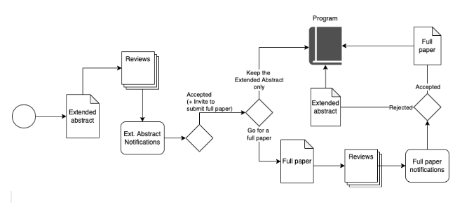

In 2022, the 18th International Conference on Open Source Systems (OSS) and the 18th International Symposium on Open Collaboration (OpenSym) are joining forces and will be held as co-located events.
The goal of bringing these two communities together is to make it a holistic forum encompassing all topics related to open collaboration research and practice, including open source, open data, open science, open education, wikis, and related social media, Wikipedia, and IT-driven open innovation research.
Open collaboration emerged as one of the most important phenomena in the last decades. More recently, we saw how this global openness helped to respond to an international crisis, the Covid-19 crisis. Researchers from all over the world gathered efforts to find how to manage the pandemic. Synergies have been created, data opened and shared, knowledge disseminated, in order to accelerate research on vaccines and understand the virus behavior.
Following this historical situation, we decided to put this edition under the theme:
“Openness in Emergency Situations”
Open science is at the heart of this theme, including open data and open source tools that enabled this large-scale collaboration. We are interested in understanding cases and research that explore questions like: How "open" can benefit the society in emergency situations? What are the risks assigned to it? What are the processes, tools, and methods implemented to support openness?
More broadly, this year more than ever, our conference is about collaborations between people from computer science, information science, management, social science, humanities, and everyone interested in open collaboration and how it is helping and changing the world.
While we will have a shared program, a single theme, and the same deadlines, we will keep two separate proceedings. The goal is to keep the specifics of each of the communities in terms of archive and history. Therefore, formatting details and topics of interest are individual to each conference/symposium.
The intersection point between these two communities is the topics related to Open Source Software. Therefore, we encourage the authors of papers that touch this specific topic to submit to the OSS Conference.
Submitted papers should present integrative reviews or original reports of substantive new work: theoretical, empirical, and/or in the design, development, and/or deployment of novel concepts, systems, and mechanisms. Research papers will be reviewed to meet rigorous academic standards of publication. Papers will be reviewed for relevance, conceptual quality, innovation, and clarity of presentation.
OSS and OpenSym 2022 will follow their traditions and will cover and welcome topics that are appealing to the advances in their areas of interest. Although we will have a focus on “Openness in Emergency Situations”, all traditional topics will be covered and welcome. For each of the events, a non-comprehensive list of topics of interest is presented below:
OSS 2022 |
|
OpenSym 2022 |
|
Wikipedia and Wikimedia Research
|
This year we will have a different, more inclusive, submission flow. We will offer the authors the opportunity to receive feedback based on extended abstracts. When submitting the extended abstract, please inform after the title of the paper (in the manuscript) if this refers to a potential full research paper, a new ideas paper, or (in the case of OSS only) a tool paper.
The papers accepted as extended abstracts will be invited to submit a full version of their paper which will be further reviewed. However, the authors who do not want to submit their full or new ideas paper (or have them rejected) will have the papers considered as part of the program as well.
We summarize this new process in the figure below:

For the extended abstracts, the following structure is recommended:
The extended abstracts maximum length is of 1,000 words. References do not count in the 1000 words limit, but the number of references is limited to 10. You may also have at most 2 graphic elements (table/figure). It is important to use the format of the conference you are submitting your extended abstract, as follows:
All submissions must present original work, unpublished, and not under submission elsewhere. The authors must clearly explain the contribution of the work in terms of its theoretical and/or practical value and situate it in relation to previous work. The review process for both events is double-blind, so manuscripts must be anonymized.
Papers should be submitted as PDF files at https://easychair.org/conferences/?conf=opensymandoss2022, choosing which track you are submitting: OSS or OpenSym. All accepted submissions will be included in their respective conference proceedings—OSS is published by Springer . The open-access preprints of all accepted submissions will be collected and referenced from the conference website.
Authors whose submitted papers have been accepted for presentation at the conference have a choice of
This is only required after acceptance of your Extended Abstract. Please look at the previous section.
Submissions to OpenSym must be in English and conform to the ACM submission template (conference, in the new single-column format). All the submissions will be reviewed in a double-blinded process.
Submissions must not exceed the page limit (15 pages plus 2 additional pages of references for research papers; 8 pages plus 1 additional page of references for New Ideas and Emerging Research papers). The page limit is strict, and it will not be possible to purchase additional pages at any point in the process (including after acceptance).
Furthermore, we plan to have a Journal Article Collection, to which the best research papers in the conference will be invited to submit an extended version.
This is only required after acceptance of your Extended Abstract. Please look at the previous section.
Submissions to the OSS Conference must be in English and conform to Springer’s guidelines for Computer Science proceedings. All the submissions will be reviewed in a double-blinded process.
OSS conference will accept three kinds of submissions:
Submissions must not exceed the page limit (15 pages plus 2 additional pages of references for research papers; 8 pages plus 1 additional page of references for New Ideas and Emerging Research papers). The page limit is strict, and it will not be possible to purchase additional pages at any point in the process (including after acceptance).
Furthermore, we plan to have a Journal Article Collection, to which the best research papers in the conference will be invited to submit an extended version.
Extended abstract submission: May 6 May 16, 2022 (Anywhere on Earth, UTC-12)
Notification of extended abstract acceptance: May 24 May 31, 2022
Paper submission: June 18 June 24, 2022 (Anywhere on Earth, UTC-12)
Author notification: July 18, 2022
Camera ready submission: August 1st July 24, 2022 (for OSS 2022 papers to meet a Springer deadline)